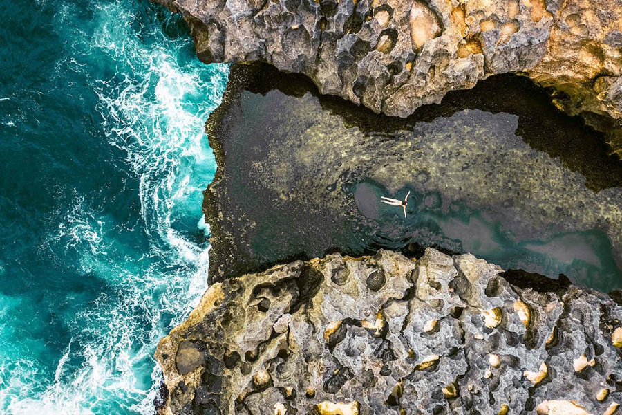

Nusa Penida is an enchanting island located just a short fast-boat ride from mainland Bali. It invites you to step away from the bustling tourist hubs of Seminyak and Canggu and immerse yourself in a world of raw, untamed natural beauty. From dramatic coastal cliffs that plunge into the sapphire ocean to vibrant underwater ecosystems, this hidden gem has rapidly become a must-visit destination for travelers seeking an unforgettable adventure.
If you are planning your first trip to the island, it is easy to feel overwhelmed. How do you get there? Is it better to rent a scooter or hire a driver? Which side of the island should you visit first? This comprehensive guide covers everything you need to know to plan the perfect Nusa Penida escape.

1. How to Get to Nusa Penida
Getting to Nusa Penida is easier than ever, but it requires a bit of logistical planning. The island does not have an airport, so the only way to arrive is by sea.
The vast majority of fast boats depart from Sanur Harbor in Bali and arrive at either Banjar Nyuh, Toyapakeh, or Sampalan harbor in Nusa Penida. The journey takes approximately 40 to 45 minutes.
- Ticket Costs: Expect to pay between 150,000 IDR and 300,000 IDR ($10 - $20 USD) for a one-way ticket, depending on the operator.
- Schedules: Boats run frequently throughout the day. Morning departures usually start between 7:30 AM and 9:00 AM, which is highly recommended to maximize your daylight hours on the island. The last boats returning to Bali usually leave around 4:30 PM to 5:00 PM.
- Pro Tip: Buy your tickets a day or two in advance, especially during the peak season (July - August), as morning boats sell out quickly. Note that you will also need to pay a small island entry tax (around 25,000 IDR) upon arrival at the harbor.
2. Getting Around the Island: Scooters vs. Drivers
This is the most critical decision you will make regarding your Nusa Penida trip. While the island looks small on a map, the reality on the ground is very different.
The Reality of Nusa Penida Roads
Nusa Penida is infamous for its challenging terrain. While the main coastal roads connecting the harbors have improved significantly, the roads leading to the most famous attractions (like Kelingking Beach and Diamond Beach) are narrow, incredibly steep, winding, and often riddled with severe potholes and loose gravel.
Why We Recommend a Private Driver
If you are not a highly experienced motorbike rider, do not rent a scooter on Nusa Penida. Minor accidents are unfortunately very common among tourists who underestimate the roads. Furthermore, navigating the bumpy terrain in the tropical heat for over an hour between destinations can be exhausting.
Hiring a private car with a local driver is the safest, most comfortable, and most efficient way to see the island. You get to relax in air-conditioned comfort, safely navigate the tricky hills, and benefit from the local knowledge of a guide who knows exactly where to park and how to avoid the worst of the crowds.
Explore Safely with a Local Expert
Skip the stressful driving and let our experienced local team handle the tough roads. We offer fully customizable private transport across the island.
View Private Driver Options3. Best Time to Visit
Like Bali, Nusa Penida experiences two main seasons: the dry season and the wet season.
- The Dry Season (April - October): This is generally considered the best time to visit. You will experience clear blue skies, sunny days, and excellent underwater visibility for snorkeling. Keep in mind that July and August are the peak tourist months, meaning larger crowds and bigger ocean swells.
- The Wet Season (November - March): While you may encounter short, heavy rain showers, the island transforms into a lush, vibrant green paradise. There are far fewer tourists, making it easier to get those perfect photos without waiting in line.
- For Manta Rays: The incredible Reef Manta Rays are residents of Nusa Penida and can be seen year-round!
4. The Dramatic West Coast Wonders
The western side of Nusa Penida is famous for its jaw-dropping cliff formations and unique geological marvels. Because these spots are relatively close to the main harbors, the West Coast is the most popular route for day-trippers.
Kelingking Beach
Often referred to as the crown jewel of the island, Kelingking Beach is arguably the most iconic location on Nusa Penida. Its unique cliff formation resembles a T-Rex and offers a dramatic panorama of turquoise waters crashing against pristine white sand far below. Safety Note: The hike down to the beach is incredibly steep, physically demanding, and consists of uneven stairs with bamboo railings. If you choose to hike down, bring plenty of water and wear proper shoes, not flip-flops.

Broken Beach & Angel's Billabong
Just a short drive away lies Broken Beach (Pasih Uug), a spectacular circular cove encircled by towering cliffs with a natural rock archway that allows the ocean tide to flow in and out. A short walk from there is Angel's Billabong, a naturally formed crystal-clear infinity pool carved into the rugged cliffs. It is perfect for stunning photography, but be extremely careful— rogue waves can crash over the edge unpredictably.

Experience the West Coast Highlights
Want to see these iconic spots without the stress of navigating the island's rugged roads? Our dedicated team ensures a seamless, all-inclusive journey from your hotel in Bali.
View West Nusa Penida Tour5. The Untouched East Coast Marvels
For those seeking a more secluded escape with arguably even more dramatic scenery, the eastern coast offers breathtaking panoramic perfection. The drive here takes over an hour from the harbor, but the views are absolutely worth the effort.
Diamond Beach & Atuh Beach
Diamond Beach is named after the sharp, diamond-shaped karst formations rising gracefully from the crystal-clear ocean. A recently carved staircase allows you to hike down to the blindingly white sand beach below. Right next door is Atuh Beach, a hidden gem offering a tranquil retreat framed by unique rock formations and local warungs selling fresh coconuts.

Thousand Islands Viewpoint & Tree House
Also known as Raja Lima, this viewpoint offers one of the most breathtaking panoramic vistas on the island, featuring scattered rock formations across the ocean that look like scattered emeralds. Nearby, you will find the famous Molenteng Tree House, providing a magical, Instagram-famous backdrop for your vacation memories.

Discover the East Coast
Explore the less-traveled, breathtaking side of Nusa Penida with a comprehensive itinerary designed for nature lovers and photography enthusiasts.
View East Nusa Penida Tour6. World-Class Underwater Adventures
Beyond its towering cliffs, Nusa Penida is a world-renowned destination for spectacular marine life and pristine coral reefs. The currents here bring rich nutrients that attract some of the ocean's most majestic creatures.
Manta Point & Crystal Bay
Snorkeling in these waters provides the exhilarating opportunity to swim alongside magnificent Reef Manta Rays. These gentle giants can have wingspans of up to 4 meters! After swimming with the mantas, snorkeling boats typically head to Crystal Bay or Gamat Bay, highly regarded for their excellent visibility, calm waters, and vibrant coral gardens teeming with tropical fish and sea turtles.

Dive Into The Blue
Ready to explore the underwater world safely? We provide all the gear, private boat transfers, and certified local expertise for an unforgettable day in the water.
View Snorkeling Tour7. Where to Stay
If you have the time, staying a night or two on Nusa Penida allows you to experience the island without the rush of the midday day-tripper crowds.
- The North Coast (Ped / Toyapakeh): This is the most developed area near the harbors. Here you will find the highest concentration of guesthouses, beach clubs, dive centers, and Western-style cafes. It is the most convenient place to base yourself.
- The West/East Coasts: If you want absolute seclusion, you can find incredible cliffside villas and rustic jungle homestays near the major attractions. Keep in mind that dining options will be largely restricted to your hotel or small local warungs.
8. Essential Packing List & Practical Tips
Before you jump on the fast boat, make sure you are prepared for island life:
- Cash is King: While larger hotels and new beach clubs accept credit cards, you will need Indonesian Rupiah for entrance fees, parking, local warungs, and smaller purchases. ATMs exist (mostly around Sampalan and Toyapakeh) but they frequently run out of cash or go offline.
- Reef-Safe Sunscreen: The sun in Nusa Penida is incredibly strong. Protect your skin and the coral reefs by bringing plenty of eco-friendly sunscreen.
- Proper Footwear: Leave the flip-flops in the car if you plan on doing any hiking. Sturdy sneakers or sports sandals are a must for navigating the steep, rocky steps at Kelingking and Diamond Beach. Water shoes are also highly recommended for snorkeling or walking on rocky shorelines.
- Motion Sickness Pills: If you are prone to seasickness, take medication 30 minutes before boarding the fast boat from Sanur.
- Offline Maps: Cell service is improving, but it completely drops out in remote areas and at the bottom of the cliffs. Download the Nusa Penida map offline on Google Maps before you arrive.
Plan Your Perfect Island Escape
Whether you are an adventure seeker, a photography lover, or someone looking to relax by pristine shores, Nusa Penida truly delivers. Its raw, unfiltered beauty is what makes it one of the most remarkable destinations in all of Indonesia.
At Bali Real Vacation, our tailored private tours and day trips ensure you experience the absolute best of this tropical paradise comfortably, safely, and affordably. Don't risk a ruined vacation on a broken scooter—let our local experts handle the logistics while you focus on making memories. We can't wait to welcome you to the island!